<!doctype html>
<html lang="en">

  <head>
    <meta charset="utf-8">

    <title>ADALTAS - Kafka</title>

    <meta name="description" content="A framework for easily creating beautiful presentations using HTML">
    <meta name="author" content="Hakim El Hattab">

    <meta name="apple-mobile-web-app-capable" content="yes">
    <meta name="apple-mobile-web-app-status-bar-style" content="black-translucent">

    <meta name="viewport" content="width=device-width, initial-scale=1.0, maximum-scale=1.0, user-scalable=no, minimal-ui">

    <link rel="stylesheet" href="../reveal.js/css/reveal.css">
    <link rel="stylesheet" href="../reveal.js/css/theme/black.css" id="theme">

    <!-- Code syntax highlighting -->
    <link rel="stylesheet" href="../reveal.js/lib/css/zenburn.css">

    <!-- Printing and PDF exports -->
    <script>
      var link = document.createElement( 'link' );
      link.rel = 'stylesheet';
      link.type = 'text/css';
      link.href = window.location.search.match( /print-pdf/gi ) ? '../reveal.js/css/print/pdf.css' : '../reveal.js/css/print/paper.css';
      document.getElementsByTagName( 'head' )[0].appendChild( link );
    </script>

    <!--[if lt IE 9]>
    <script src="lib/js/html5shiv.js"></script>
    <![endif]-->
  </head>

  <body>

  <div style="position:absolute; top:20px; left:20px;">
  <p></p>
  </div>

    <div class="reveal">

      <!-- Any section element inside of this container is displayed as a slide -->
      <div class="slides">

<section data-markdown >
<script type="text/template">
# Kafka

### The High-Throughput Distributed Messaging System


#### [http://kafka.apache.org](http://kafka.apache.org)
</script>
</section>


<section data-markdown style="text-align: left;">
<script type="text/template">
## What is Kafka?
Low latency publish-subscribe messaging system allowing real-time streaming data sources

#### Kafka provides

* Scalability
* Durability
* Reliability
* High-Performance
</script>
</section>


<section data-markdown>
<script type="text/template">
## Kafka's core concepts
</script>
</section>


<section data-markdown>
<script type="text/template">

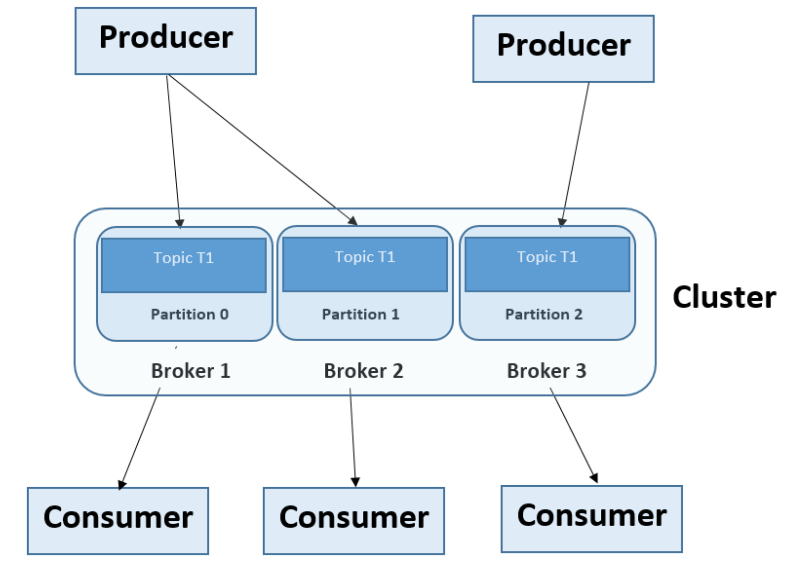

* Topics: a user-defined category to which messages are published
* Producers: publish messages to one or more topics
* Consumers: subscribe to topics and process published messages
* Brokers: Kafka servers that manage the persistence and replication of message data
</script>
</section>


<section data-markdown >
<script type="text/template" >
### Anatomy of a topic: partitions

* To allow parallelism, TOPICS are split into PARTITIONS
* PARTITIONS are ordered and immutable sequences of messages that are continually appended to
* PARTITIONS are replicated to ensure fault-tolerance

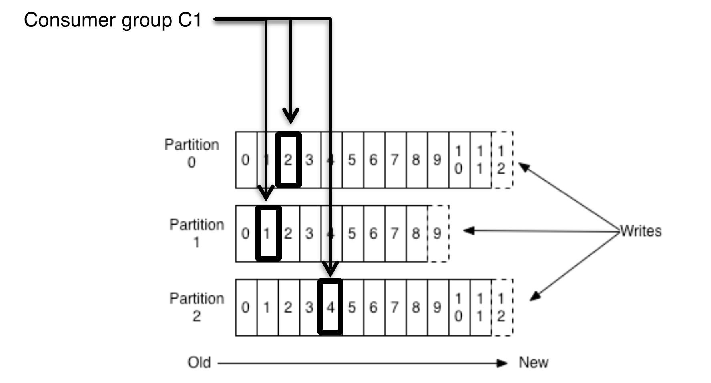

The number of partitions of a topic is configurable
</script>
</section>


<section data-markdown>
<script type="text/template" >
### Anatomy of a topic : partition leader

<p  style="text-align: left;">Each partition has one broker which acts as the "leader" and zero or more brokers which act as "followers"</p>

* LEADER: handles all read and write requests for the partition
* FOLLOWER: passively replicate the leader

<p style="text-align: left;">Each server acts as a leader for some of its partitions and a follower for others so load is well balanced within the cluster</p>

</script>
</section>


<section data-markdown >
<script type="text/template" >
### Anatomy of a topic : writes / reads

Producers always append to the tail


* Consumers use “offset pointers” to track their read progress
* A consumer can reset to an older offset to reprocess

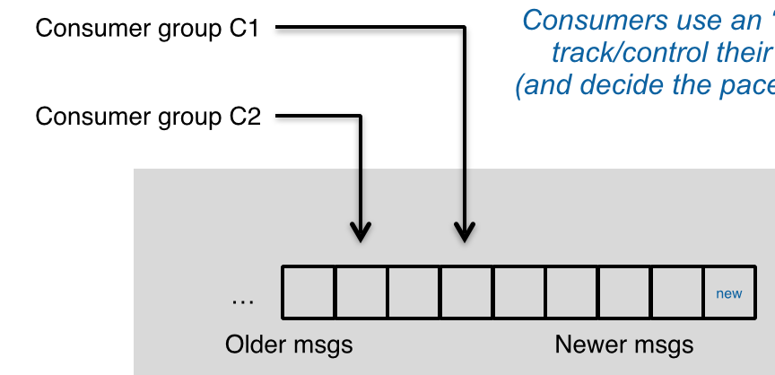

</script>
</section>


<section data-markdown >
<script type="text/template" >
## Consumer group

* Consumers label themselves with a consumer group name
* Messages published to a topic are delivered to ONE consumer instance within each subscribing consumer group

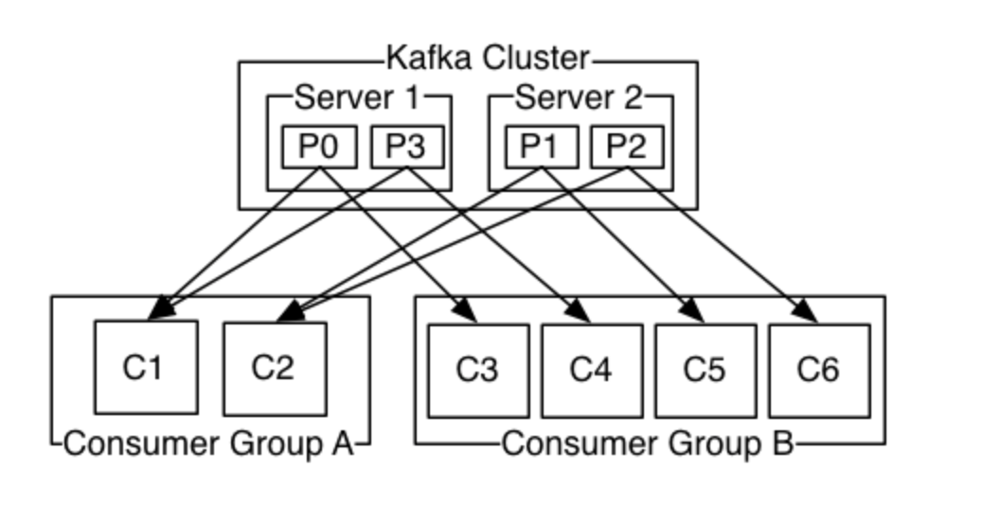

* This is finally publish-subscribe system where the subscriber is cluster of consumers instead of a single instance
</script>
</section>


<section data-markdown >
<script type="text/template" >
#### Brokers and Consumers need Zookeeper to manage and share state

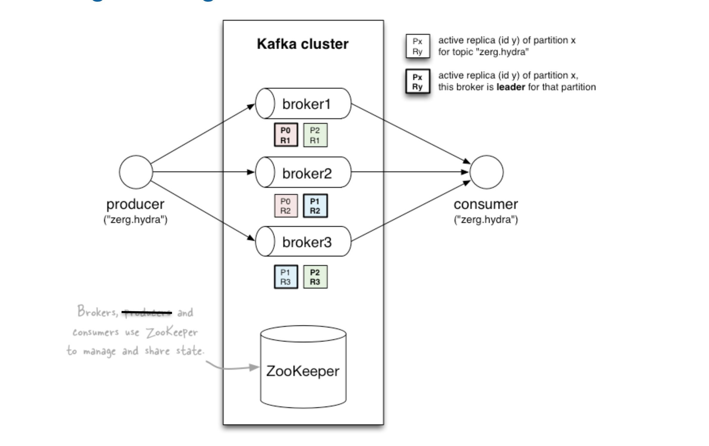
</script>
</section>


<section data-markdown >
<script type="text/template">
### Keys of Kafka's high performance

##### Fast writes

* While Kafka persists all data to disk, essentially all writes go to the page cache of OS, i.e. RAM
* Since writes to a partition are sequential, this design greatly reduces the number of hard disk seeks

##### Fast reads

* Very efficient to transfer data from page cache to a network socket
* Each consumer is responsible for keeping track of what messages it has consumed
</script>
</section>

<section data-markdown >
<script type="text/template">


At the moment there's basically no security built-in
</script>
</section>


<section data-markdown>
<script type="text/template">
### Common uses of Kafka

* Website activity tracking
* Operational metrics
* Log aggregation
* Real-time stream processing
* Message bus
</script>
</section>


<section data-markdown>
<script type="text/template">
# Running Kafka

### LinkedIn's example
</script>
</section>


<section data-markdown>
<script type="text/template">
### Kafka at LinkedIn

* 300+ Kafka brokers
* 18 000+ topics split into 180 000+ partitions
* 220 B of event / day ~ 2.5 M / s
* Write 40Tb of data / day
* Read 160Tb of data / day
</script>
</section>


<section data-markdown>
<script type="text/template">
# Operating Kafka

### Typical operations
</script>
</section>


<section data-markdown>
<script type="text/template">
### Manage Topics

##### Create topic

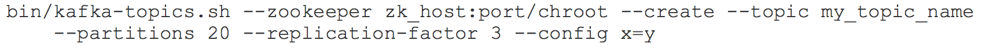

##### Add partitions
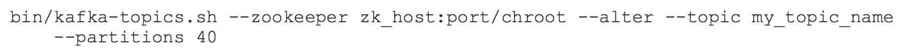

##### Describe topic
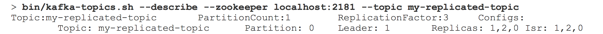
</script>
</section>


<section data-markdown>
<script type="text/template">
### Manage Producer
##### Create producer
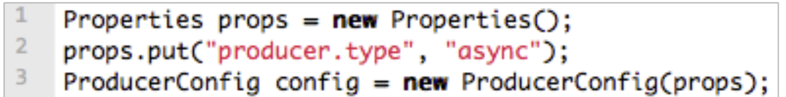

There's two types of producers

* sync : to write one message at a time
* async : to batch messages

##### Write data


</script>
</section>


<section data-markdown>
<script type="text/template">
### Manage Consumer

##### Create consumer
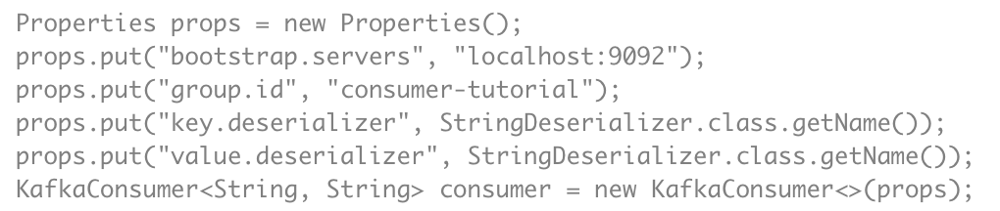

##### Subscribe to a topic


##### Read data
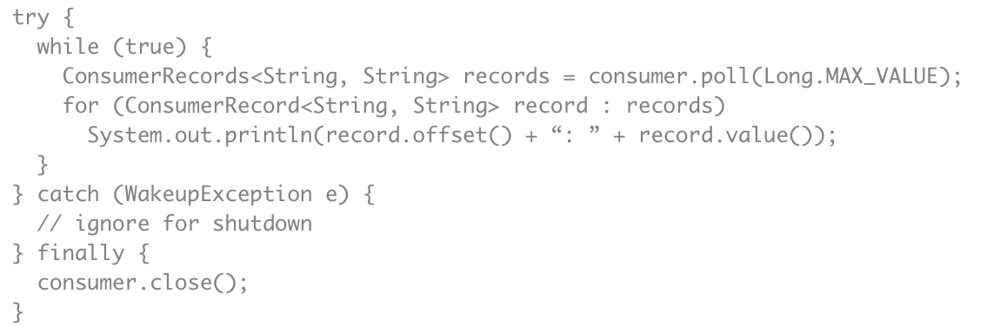
</script>


      </div>
    </div>

    <script src="../reveal.js/lib/js/head.min.js"></script>
    <script src="../reveal.js/js/reveal.js"></script>

    <script>

      // Full list of configuration options available at:
      // https://github.com/hakimel/reveal.js#configuration
      Reveal.initialize({
        controls: true,
        progress: true,
        history: true,
        center: true,

        transition: 'slide', // none/fade/slide/convex/concave/zoom

        // Optional reveal.js plugins
        dependencies: [
          { src: '../reveal.js/lib/js/classList.js', condition: function() { return !document.body.classList; } },
          { src: '../reveal.js/plugin/markdown/marked.js', condition: function() { return !!document.querySelector( '[data-markdown]' ); } },
          { src: '../reveal.js/plugin/markdown/markdown.js', condition: function() { return !!document.querySelector( '[data-markdown]' ); } },
          { src: '../reveal.js/plugin/highlight/highlight.js', async: true, callback: function() { hljs.initHighlightingOnLoad(); } },
          { src: '../reveal.js/plugin/zoom-js/zoom.js', async: true },
          { src: '../reveal.js/plugin/notes/notes.js', async: true }
        ]
      });

    </script>

  </body>
</html>